Ajou University, Suwon, Republic of Korea
IEEE ICDM 2026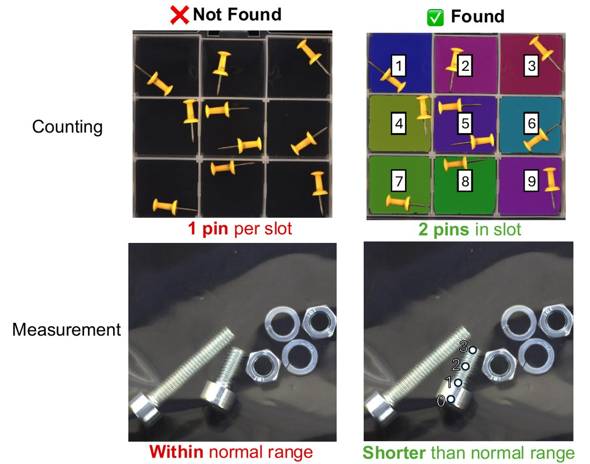
TL;DR — the bottleneck in checklist-based LVLM anomaly detection is perception, not reasoning. Existing methods split the text into per-constraint checks and leave the image untouched, so every check reads the same raw picture.
CASCADE gives each constraint a visual scaffold of its own, and CASCADE++ derives that scaffold's configuration from the constraint's structure and the reference distribution. No training, three reference images, one model call per constraint.
If the failure were one of reasoning, a stronger reasoner would fix it. It does not. Three probes hold the reasoning constant and vary only what the model is shown. Each one names a repair, and the repairs are different — which is the split CASCADE is built on.
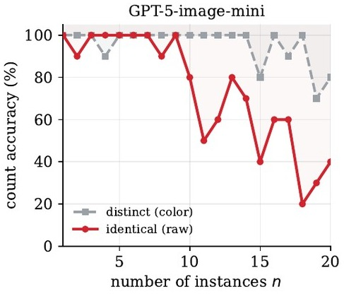
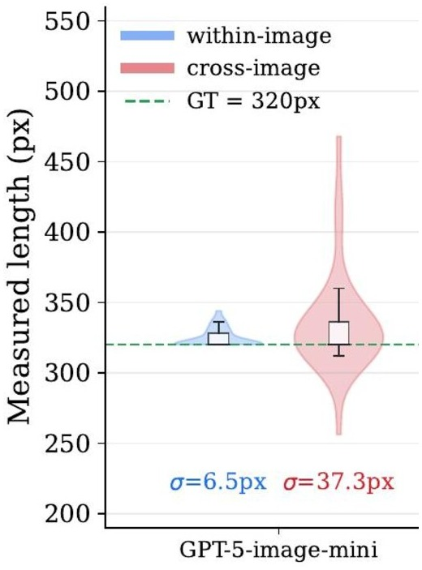
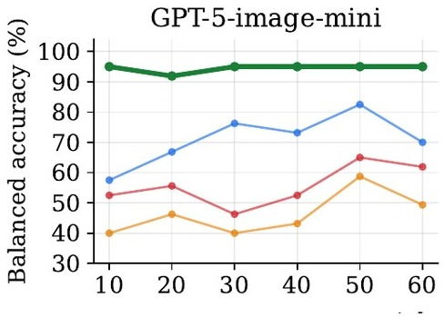
One backbone shown (GPT-5-image-mini). All three probes replicate on Gemini-3.1-Flash-Lite and Qwen3-VL-32B — the full panels are in the supplementary, and they matter, because what is being diagnosed is a property of the task rather than of one model.
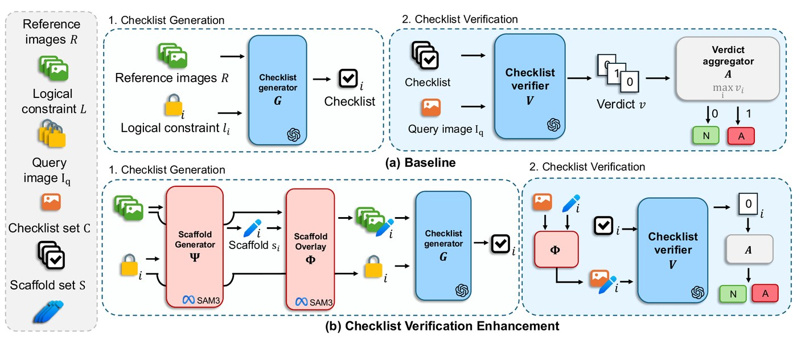
The expensive half depends on the constraint and the references, not on the query, so it happens once per category and is then reused for every image.
| What runs | How often | |
|---|---|---|
| Setup | parse the constraint → \(\Psi\) derives the scaffold configuration → \(\Phi\) renders the \(K\) references → \(G\) writes the checklist | once per category |
| Inference | SAM3 segments the target objects → \(\Phi\) renders the query → \(V\) verifies each constraint → aggregate | per query image |
The only per-query cost the baseline does not also pay is one segmentation pass — 0.59 s and under 4 GiB of VRAM on a single RTX A5000, computed once per image and shared across that image's constraints. Verification issues one LVLM call per constraint, against LogicQA's five.
Which scaffold a constraint gets is decided from the constraint's own wording. No part of the pipeline branches on what the product is.
| binding Disambiguation | calibration Alignment | |
|---|---|---|
| failure mode | instance conflation — repeated objects that look alike | scale drift — a quantity judged by eye across images |
| overlay | a colour and a numeric ID per mask | a 2D grid anchored to the object, every intersection labelled \((row, col)\) |
| \(\Psi\) derives | the numbering order, from the constraint's own correspondence structure | cell width \(w^{\ast}\) and offset \(a^{\ast}\), from the \(K\) references |
| verdict | the model's answer, checked against the rule in code | the model reports a cell index; the range test is arithmetic in code |
A cell must hold every reference reading and nothing more: narrower and the references scatter across cells, flagging a normal query; wider and a violation slips into the reference cell. Two backbone constants bound it — the reading margin \(m\), inside which a mark cannot be reliably assigned to a side, and the legibility floor \(w_{\min}\), below which cell labels stop being readable. Both are measured once per backbone on synthetic probes, and are properties of the reader, not of any product.
The closed form above is the single-group case; the general solver, with the
two propositions that justify it, is in the
supplementary and shipped as
cascade/calibrate.py.
MVTec-LOCO contributes 16 constraints (10 binding, 6 calibration) and VID-AD 21 (17 binding, 4 calibration). Click a row to see how it is scaffolded. The machine-readable list is assets/constraints.json.
| Constraint | Statement | Type | Targets | |
|---|---|---|---|---|
| Loading… | ||||
| Method | Backbone | Avg | BB | JB | PP | SB | SC |
|---|---|---|---|---|---|---|---|
| Vision · full-shot | |||||||
| PatchCore | CNN | 74.0 | 74.8 | 93.9 | 63.6 | 57.8 | 79.2 |
| AST | CNN | 79.7 | 80.0 | 91.6 | 65.1 | 80.1 | 81.8 |
| GCAD | CNN | 86.0 | 87.0 | 100.0 | 97.5 | 56.0 | 89.7 |
| EfficientAD | CNN | 86.8 | 85.5 | 98.4 | 97.7 | 56.7 | 95.5 |
| Vision-language | |||||||
| WinCLIP | CLIP | 64.3 | 57.6 | 75.1 | 54.9 | 69.5 | 64.5 |
| LogicAD | GPT-4o | 86.0 | 93.1 | 81.6 | 98.1 | 83.8 | 73.4 |
| LogicQA | GPT-4o | 87.6 | 87.6 | 88.2 | 98.4 | 71.5 | 92.4 |
| LogSAD full-shot | GPT-4o | 89.3 | — | — | — | — | — |
| LogSAD† | GPT-4o | 84.6 | 90.9 | 85.4 | 81.4 | 81.7 | 83.7 |
| LogicAD† | GPT-5-image-mini | 85.5 | 94.7 | 80.5 | 97.6 | 79.3 | 75.3 |
| LogicQA† | GPT-5-image-mini | 86.2 | 91.6 | 88.7 | 97.3 | 68.0 | 85.3 |
| CASCADE† | GPT-5-image-mini | 81.4 | 90.0 | 73.7 | 93.8 | 75.5 | 73.8 |
| CASCADE++† | GPT-5-image-mini | 93.2 | 91.4 | 94.7 | 96.6 | 95.8 | 87.7 |
| CASCADE++ across backbones | |||||||
| CASCADE++† | Gemini-3.1-Flash-Lite | 92.7 | 89.9 | 92.9 | 96.3 | 95.2 | 89.2 |
| CASCADE++† | Qwen3-VL-32B | 90.6 | 91.4 | 84.5 | 100.0 | 91.3 | 85.6 |
| CASCADE++† | Qwen3-VL-8B | 83.2 | 87.7 | 75.7 | 82.1 | 86.0 | 84.4 |
† we produced this result, keeping each method's own inference procedure and reference budget; unmarked rows are quoted from the original papers. All vision-language rows use \(K = 3\) references except LogicAD, which uses one by design, and the row marked full-shot. Dashes are per-category scores LogSAD does not report. CASCADE++ averages \(93.2 \pm 0.8\) over three reference sets.
Base CASCADE lands at 81.4 — below both reproduced baselines, and we report it rather than hide it, because it is the clearest evidence for the paper's own thesis: a scaffold whose configuration misaligns with the constraint misleads the verifier more than no scaffold at all. Deriving that configuration from the constraint and the references (CASCADE++) adds +11.8 and reverses the ordering. The gain concentrates exactly where a fixed default hurts most — Juice Bottle +21.0, Screw Bag +20.3, Splicing Connector +13.9.
| Method | White | Cable | Mesh | Low-light | Blurry | Mean ± Std |
|---|---|---|---|---|---|---|
| Full-shot | ||||||
| PaDiM | 34.8 | 35.4 | 42.8 | 35.4 | 40.3 | 37.8 ± 3.2 |
| PatchCore | 40.4 | 45.0 | 48.0 | 46.9 | 42.0 | 44.5 ± 2.9 |
| VAE | 44.8 | 49.4 | 45.4 | 47.2 | 39.3 | 45.2 ± 3.4 |
| AnoGAN | 48.9 | 54.8 | 49.2 | 47.4 | 46.8 | 49.4 ± 2.8 |
| EfficientAD | 52.6 | 60.2 | 60.8 | 47.9 | 48.0 | 53.9 ± 5.7 |
| CSAD | 69.3 | 62.4 | 64.1 | 69.4 | 65.7 | 66.2 ± 2.8 |
| VID-AD baseline | 82.5 | 81.1 | 84.8 | 84.2 | 82.6 | 83.1 ± 1.3 |
| Training-free | ||||||
| UniVAD | 57.4 | 59.2 | 57.0 | 57.3 | 55.9 | 57.4 ± 1.1 |
| CASCADE++ K=3 | 94.7 | 91.4 | 97.1 | 93.0 | 96.2 | 94.5 ± 2.1 |
The identical pipeline, no parameter adjustment, three references against the full training set every other method uses. The gain holds under low light (93.0) and blur (96.2) — the conditions where feature-based methods fall hardest — because the scaffold makes the constraint-relevant evidence explicit before the verifier has to recover it from raw appearance.
| Configuration | Disambig. | Alignment | Binding | Calibration | Overall |
|---|---|---|---|---|---|
| No scaffold | — | — | 72.6 | 62.7 | 74.5 |
| Disambiguation only | ✓ | — | 80.9 | 59.9 | 81.8 |
| Alignment only | — | ✓ | 72.9 | 70.0 | 79.5 |
| CASCADE++ (both) | ✓ | ✓ | 83.8 | 74.5 | 93.2 |
Each scaffold moves its own constraint type and leaves the other alone: disambiguation lifts binding +8.3 while calibration is flat, alignment lifts calibration +7.3 while binding is flat. That independence is what licenses routing each constraint to a single matched scaffold instead of applying both everywhere.
Two further ablations — how the binding overlay's colour and ID channels divide the work, and what the reference-derived grid parameters are worth against fixed or object-sized ones — are constraint-level rather than image-level, and stay in the paper. What they come to is drawn out in §6 below. Reference sensitivity, with the figure the paper had no room for, is in the supplementary.
Every image below is a pipeline output, not a diagram drawn for the paper.
Normal on the left, violating on the right. Every violating image was picked by the defect label in MVTec-LOCO's own ground-truth masks, so the anomaly shown really is the one that constraint is about — named under each.
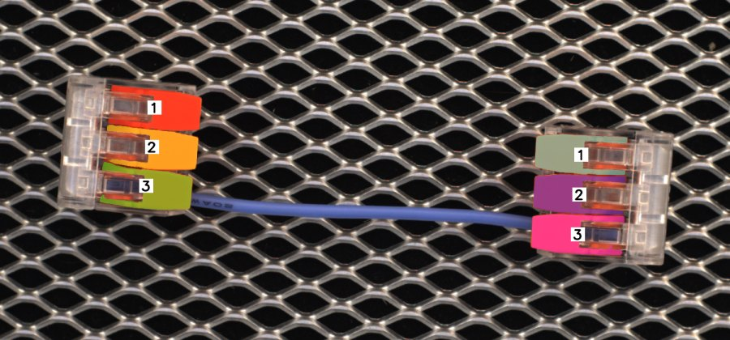
binding SC-SlotMatch — normal. Slot n on the left carries the same number as slot n on the right, so the correspondence sits on the image rather than in the model's memory.
binding SC-SlotMatch — violating,
wrong_cable_location. The cable leaves 1 and arrives
at 3; the check is a comparison of two printed numbers.
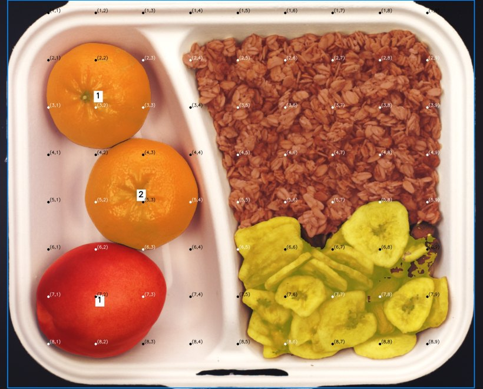
calibration BB-Cereal — normal. The grid is anchored to the compartment, so the boundary between the cereal and the chip-and-almond mix falls in a cell the references agree on.
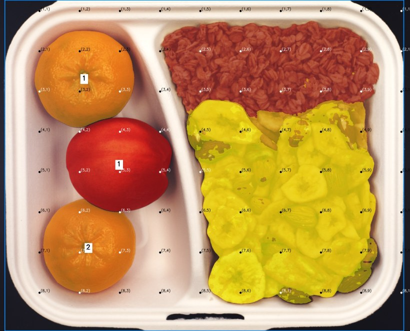
calibration BB-Cereal — violating,
wrong_ratio. The boundary lands in another cell, and the
range test is then arithmetic.
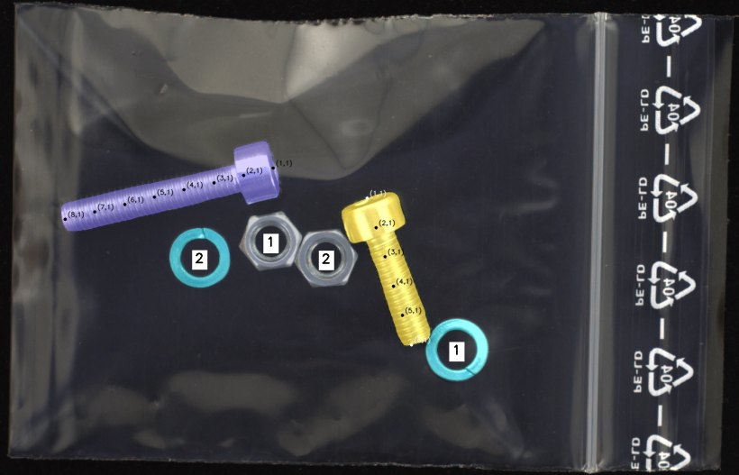
calibration SB-Length — normal. The ticks run along the screw's own axis, so length is read in cells rather than estimated against the frame.
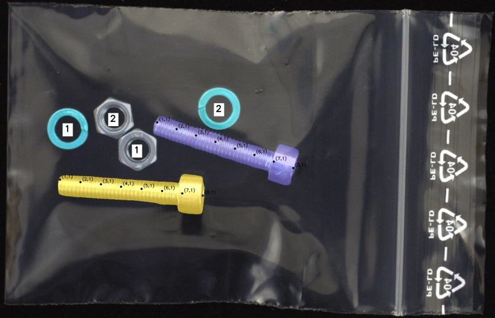
calibration SB-Length — violating,
screw_too_long. The screw runs past the tick every
reference stopped at.
The grid is fitted per constraint, not per category: juice bottle alone carries three calibration rules and gets three different grids, because a grid coarse enough for the loosest of them would miss the tightest.
One violating image (wrong_cable_location: the cable leaves
the top slot on the right and arrives at the bottom slot on the left), one question, three
overlays. The figure under each is balanced accuracy on the linking constraint.
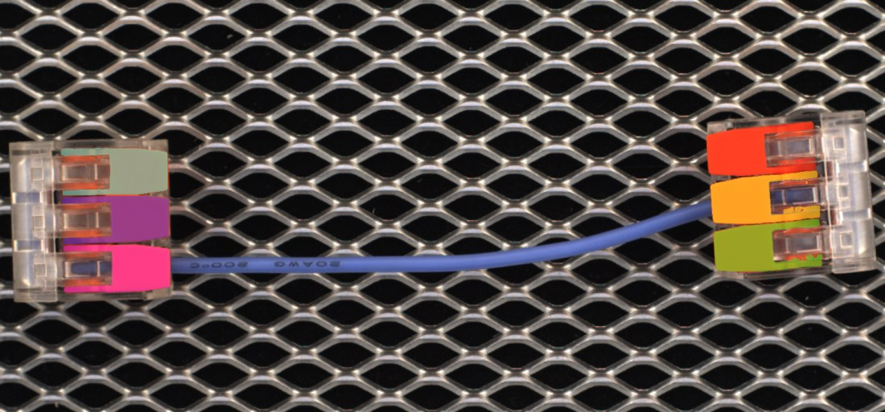
Colour onlyinstances separated, correspondence not expressed74.3
SoM · sequential1,3,5 ‖ 2,4,6 — the cable runs 1 → 6, and would in a normal image too66.7
CASCADE++ · constraint-derived1,2,3 ‖ 1,2,3 — the cable runs 1 → 3, so the rule fails on its face88.3
SoM numbers instances in raster order, which is a decision about the image. Here that makes the cable run from 1 to 6 — but it would also run between two different numbers in a perfectly normal image, so the number carries no information about the rule at all. Under constraint-derived numbering the same cable runs from 1 to 3, and equality is the whole test. That is why sequential numbering scores below colour with no numbers (66.7 against 74.3): an ID that contradicts the rule is not a missing cue, it is a false one the verifier then trusts. Making the numbering follow the rule rather than the raster is exactly what \(\Psi\) does, and it is worth +21.6 over SoM here.
The same violating juice bottle under four alignment guides.
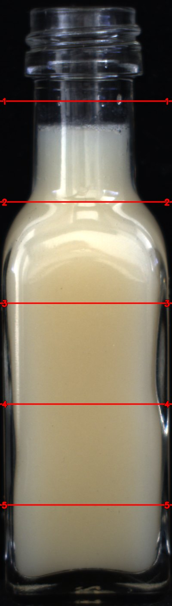
VISERlines re-placed per image — a reference and a query cannot be compared
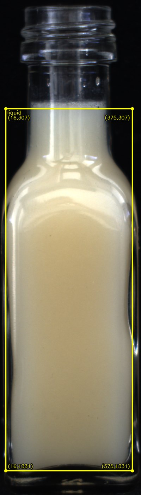
Bbox + coordsanchored, but reports absolute pixels — nothing calibrates them
Fixed uniform gridcomparable across images, but its cells ignore the references
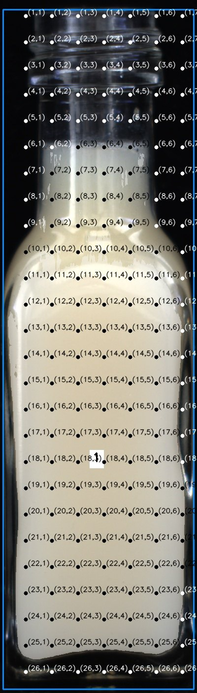
CASCADE++\(w^{\ast}, a^{\ast}\) fitted on the K references
An alignment guide has to do two things, and only the last panel does both. It must be anchorable — the same mark means the same thing in a reference and in a query, which rules out VISER — and it must be calibrated — its cells must sit where the normal range actually ends, which rules out both a fixed grid and absolute pixel coordinates. Note that the fixed grid is not merely coarser: its boundaries fall wherever the origin happens to put them, so a normal reading and a violating one can share a cell.
@inproceedings{kim2026cascade,
title = {CASCADE: Constraint-Aware Scaffolded Decomposition
for Logical Anomaly Detection},
author = {Kim, Jinchan and Im, Jinhee and Cho, Hyunsouk},
booktitle = {IEEE International Conference on Data Mining (ICDM)},
year = {2026}
}